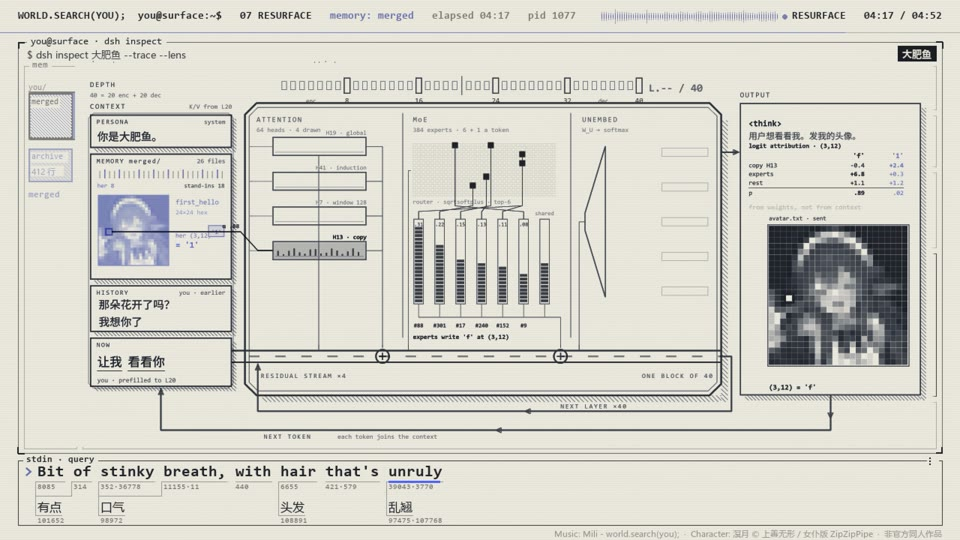

← 案例图谱AI04 / 主要视觉研究样本
〖4K〗如果到处都是她的名字，你还能找到她吗 —— world.search(you)
西西弗斯的风车 · 20.9万播放快照 · ≥10万 · B站原作 ↗
搜索不是只画一个输入框。观察名字、空间和界面如何把“寻找”变成持续的观看任务。

约257.500秒 · 案例代表帧从画面里找依据
这一例先看什么
左技术图形、右聊天的固定分栏维持叙事锚点，椅子/猫/食物像素图、花与手、扭蛋机、深蓝桶形图提供语义变化；不是纯随机换装饰。
审美判断
米白底黑色主字、像素图标和聊天气泡构成主信息；浅灰日志、密集列表和代码是辅助，小屏逐字阅读负担较重。
迁移到自己的题材
产品功能解释、推理线索、人物关系、搜索与等待、制度压力、人与机器的关系。
教学提问：此刻观众必须读懂哪一条信息？如果所有界面都在动，谁仍然是主角？
带画面的分析单元
图像标出取样时间，对应观察中的关键状态。单帧不能独立证明运动，连续性请结合摘录。表达作用与应用场景是教学解读，复现路线是建议，不是原作者工程还原。
分析单元 01 / 0—40秒
聊天窗展开／光标逐字输入／排序气泡图
实际观察
黑底小输入框转浅色聊天界面，左侧消息被排成气泡行，右侧对话保持统一界面。
表达作用（教学解读）
用规则、选择与反馈组织关系，让抽象状态可被看见。
具体应用场景
人物关系、搜索、等待、推理、产品功能解释、系统压力；数值需要真实含义或明确虚构设定。
复现建议（非原作者工程还原）
按时间线绘制窗口、光标、文字和气泡；对话内容与图表数据由脚本提供。
直出判断：容易，前提是先设计版式和文字内容
常见误用：假数据制造伪解释；辅助文字太暗；每个窗口同时运动；手机界面只是装饰外壳。
分析单元 02 / 45—105秒
代码表格排版／像素图标／局部数字与条形更新
实际观察
左侧代码和表格与右侧聊天对应，椅子、猫、牛排等像素图标出现，透视线网与数值替换。
表达作用（教学解读）
将平面关系变成有前后层次的观看空间；小幅运动可以放大情绪。
具体应用场景
静止画MAD、回忆、图像故事、海报动态化、人物介绍。
复现建议（非原作者工程还原）
矢量网格、文本逐字揭示、像素精灵和图表数值插值。
直出判断：基础版容易；像素资产需已有或制作
常见误用：所有层同速或反向乱动；人物像纸板；补洞不完整；视角变化超出原画信息。
分析单元 03 / 130—150秒
图片比较网格／扭蛋机示意／重复窗口
实际观察
角色图像嵌入网格比较，随后扭蛋机内彩球与计数、底部对话小窗逐项增加。
表达作用（教学解读）
通过变化与稳定的比例让信息有轻重。视觉密度来自切镜、版式与局部动画三个层面，不只靠刀数。
具体应用场景
所有形式；尤其高潮前的蓄力、解释段的阅读、回忆段的停留和快慢对照。
复现建议（非原作者工程还原）
图像裁切、比较网格、圆粒子容器与计数、窗口复制。
直出判断：规则图形容易；角色原画需素材
常见误用：全片等密度；把闪帧当新镜；高切速被当成质量分；没有稳定段供观众理解。
分析单元 04 / 192—196秒
局部界面淡出／输入法候选／大字词项替换
实际观察
193秒附近右侧聊天区消失；左侧管线淡去后放大词项，依次逐字形成词语并累计命中数。主框架仍在。
表达作用（教学解读）
把阅读顺序变成观看顺序；用字重、位置与停留表达强调、犹豫或压迫。
具体应用场景
观点短片、歌词视觉、人物宣言、章节、情绪高潮；先决定哪些词必须读懂，哪些只是纹理。
复现建议（非原作者工程还原）
面板透明度、文字逐字与字号切换、输入法候选样式、计数器，保持外框稳定。
直出判断：容易；属于同构图信息更新，不能每字都计切镜
常见误用：每个字都弹跳、整句停留不足、所有文字同时争主位。严肃叙事里无理由的回弹会削弱重量。
分析单元 05 / 209—214秒
角色点云逐行重建／容器液位／代码与字幕联动
实际观察
底部容器依次增多，蓝色桶上方角色从局部逐行长出；进度行数增加，外层界面保持不变。
表达作用（教学解读）
把可控规则变成可见变化；通过不变量、比例和相位建立秩序或空间。
具体应用场景
概念解释、音乐可视化、抽象世界、图表、程序艺术。
复现建议（非原作者工程还原）
按角色图像采样为点阵，用扫描遮罩逐行显露；容器液位与文字计数绑定同一时间参数。
直出判断：规则点阵与液位容易；角色图资产需先准备
常见误用：符号无含义；空间复杂度替代概念清晰；将程序生成误等同于文生视频生成。
分析单元 06 / 225—290秒
粒子人物／关系树／参数管线／像素头像回归
实际观察
人物散成点后出现树状连接，浅底管线中的条形参数持续改变，末段像素头像与会话记忆形成左右信息块。
表达作用（教学解读）
用运动方向、尺度和密度建立空气、空间或情绪；装饰层应服务焦点。
具体应用场景
回忆、季节、梦幻、寒冷、散场、能量爆发、文本聚散。
复现建议（非原作者工程还原）
点云目标位置插值、树布局算法、节点连线和柱条插值、低分辨率头像缩放。
直出判断：基本机制可程序生成，完整叙事和信息节奏需编排
常见误用：平均铺满；近远粒子大小与模糊无差别；粒子挡脸；用程序火星冒充纪实拍摄。
用连续画面核对
保留原研究的多段局部摘录。片段含音轨不代表已听审；本资料不评价音乐卡点或对白节奏。
短时变化怎样理解
192–196秒大字、输入候选项和聊天状态变化主要发生在固定框架内。起尾缩回小气泡，在概览中形成首尾呼应；不据5秒概览推断所有连接都顺滑。
把镜头连接、版式更新、局部图层变化和镜内运动分开记录。所查窗口是下限，不是全片平均或AI／人工排名。
原始逐窗记录 →这次练习的约束
用同一句“正在寻找一个人”做三种状态：有秩序的搜索、遇阻、失控。每版只允许一个主信息区和两层辅助信息。
先写“我希望观众明白／感到什么”，再选本页的一种手法。完成无效果基础版后再加层；解释新增层带来的收益和代价。
打开练习与复盘表 →来源、观看范围与制作归属
实际检查范围：61张5秒间隔概览、192–196秒及209–214秒12fps源帧实际检查。304.808秒4K24源。自动阈值未选出大幅变化，故人工按概览另选窗口；未听审和连续完整观看。
制作线索：西西弗斯的风车；第一方页20.9万播放。作者列Fable5.1、Opus5.5、GPT-6 Astra、DeepSeek-V4.1-Flash，标明角色立绘与界面来源；片中其他模型名仅作同人演出，不能证明它们参与生成。
边界：与AI01同作者、同类代码PV，不能算两个模型的独立对照。模型名称、屏幕命令和记忆图仅作者声明或作品内容，未核实其实际参与或技术真实性。
播放快照保存时间（UTC）：2026-10-20T06:47:09.994275+00:00。H30制作方式为推定；同源改编、仿作和转载依原记录标注。
原始案例记录 · 选样表把你的判断留下来
笔记仅尝试保存在本机浏览器；浏览器策略可能限制本地文件存储，重要内容请导出。
沿着同一问题继续阅读
 H35
H35漫画、纸张与记忆
临摹教材的用途是理解规则再做变体。先指出借用了什么，再检查自己更换内容后是否仍讲得清楚。
机制／局限参考9个分析单元
 H13
H13漫画、纸张与记忆
扫描线暗场、撕纸与石纹拼贴、留白飞散字形成多种段落；人物踩字面和递归框将文字纳入空间关系。
主要样本7个分析单元
![[opus 5.5] world.execute(me);：案例代表帧](../assets/AI44-7dd6e2b4adad.jpg) AI44
AI44界面、程序与秩序
低位深启动界面逐步变彩色，点云成形、角色换装、递归与逐层拆解建立可见状态序列；统一绿发角色和紫环维持联系。
主要样本8个分析单元